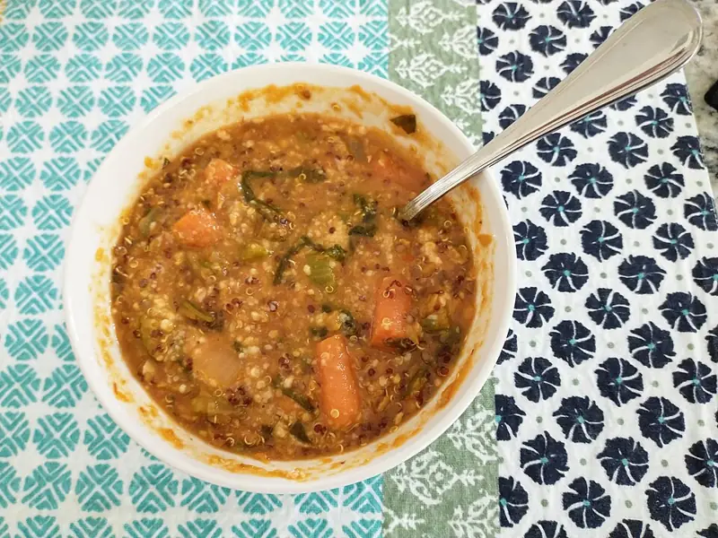

Фото: Whoisjohngalt, CC BY-SA 4.0

Суп из красной чечевицы
Турецкий суп-пюре из красной чечевицы с зирой и лимоном
35 мин4 порц.280 ккал на порциюБ 14 · Ж 9 · У 35Средиземноморская кухня
Продукты на 4 порц.
- Чечевица красная1 стак.
- Вода1,5 л
- Лук репчатый1 шт
- Морковь1 шт
- Картофель1 шт
- Томатная паста1 ст. л.
- Оливковое масло2 ст. л.
- Зира1 ч. л.
- Паприка1 ч. л.
- Соль1 ч. л.
- Перец чёрный молотый1 щеп.
- Лимон0,5 шт
Как готовить
- Промойте чечевицу в холодной воде 3-4 раза.
- Лук, морковь и картофель нарежьте кубиками.
- Сложите в кастрюлю чечевицу, овощи и томатную пасту, залейте водой. Доведите до кипения на сильном огне, снимите пену.
- Варите на слабом огне 20 минут, пока чечевица и овощи не разварятся.
- Добавьте соль, зиру, паприку, перец и масло. Измельчите суп блендером до гладкости.
- Прогрейте 2 минуты. Подавайте с долькой лимона.
Совет. Если суп загустел после остывания, разбавьте горячей водой. Красную чечевицу не замачивают.